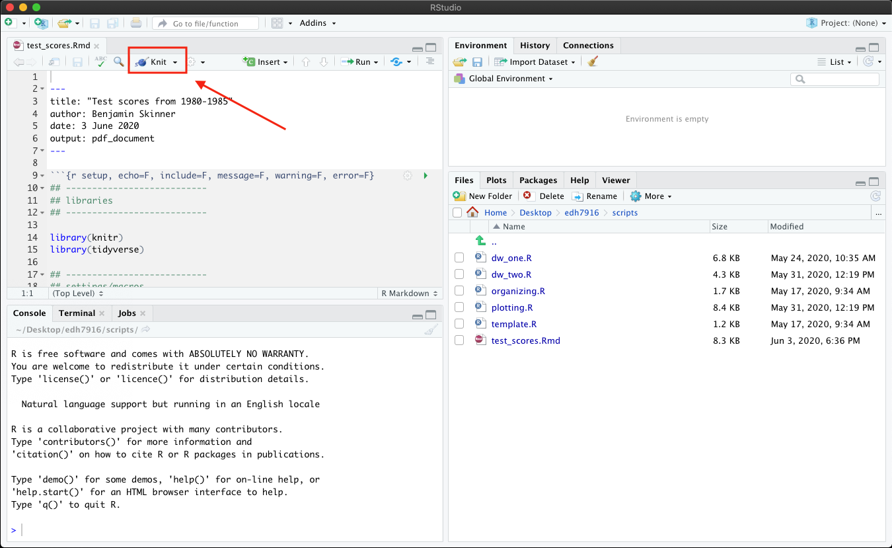

A course in quantitative research workflow for students in the higher education administration program at the University of Florida
In this lesson, we’ll combine many of the pieces we’ve already covered — reading in data, cleaning data, making figures — into a single RMarkdown document. We’ll purposefully keep it simple at first by reusing some code we’ve seen before.
To properly compile a PDF documents from Markdown, you’ll need some version of LaTeX, a typesetting system best known for being able to nicely render mathematical notation but that is really useful for making reproducible documents. You should have already downloaded this at the start of the course. If you didn’t, visit the software page for information on how to get it.
If you are unable to get LaTeX to install properly or cannot get the document to compile as PDF, you should be able to compile to HTML instead.
You will also need the R knitr and rmarkdown libraries. You should have rmarkdown already, but if you haven’t already installed either, type
install.packages(c("knitr","rmarkdown"))
into your R console. NOTE that even if you’ve already installed
rmarkdown, install.packages() will just quickly reinstall it.
R Markdown is a file format for making dynamic documents with R. An R Markdown document is written in markdown (an easy-to-write plain text format) and contains chunks of embedded R code…
In other words, an RMarkdown (hereafter RMD) document has two basic components:
RMD documents use the file ending, *.Rmd, which makes sense as they
combine R code with md text. To compile an RMD file, meaning to
You will use the rmarkdown render() function, which in turn uses
the knitr knit() function under the hood. It can be a bit
confusing how all the pieces work
together, but luckily, you can
use RStudio’s point-and-click interface to knit your documents.
When you open a blank RMarkdown document, RStudio will by default fill it with some example text that looks like this. You can change this in RStudio’s settings, but I think it’s helpful to see the skeleton of an RMarkdown document (plus, it’s not a big deal to just erase the parts you don’t need).
---
title: "Document Title"
author: "Benjamin Skinner"
date: "1/30/21"
output: pdf_document
---
```{r setup, include=FALSE}
knitr::opts_chunk$set(echo = TRUE)
```
## R Markdown
This is an R Markdown document. Markdown is a simple formatting syntax
for authoring HTML, PDF, and MS Word documents. For more details on
using R Markdown see <http://rmarkdown.rstudio.com>.
When you click the **Knit** button a document will be generated that
includes both content as well as the output of any embedded R code
chunks within the document. You can embed an R code chunk like this:
```{r cars}
summary(cars)
```
## Including Plots
You can also embed plots, for example:
```{r pressure, echo=FALSE}
plot(pressure)
```
Note that the `echo = FALSE` parameter was added to the code chunk to
prevent printing of the R code that generated the plot.
Rather than going through this example text to learn about RMarkdown,
we’ll use our own example document, test_scores.Rmd, which is linked
above.
We’ll go through the main sections our example RMD document below. So
you can follow along better, you should compile test_scores.Rmd as
your first step.
Once you’ve downloaded the file and data (if you don’t have it
already), place the RMD file in the scripts directory and the
unzipped data in the data directory.
When you open test_scores.Rmd in RStudio, you should see a button in
the upper left facet that says Knit with a ball of string icon.

If you have the working directory correctly set to
scripts and have placed the sch_test/ data folder inside data,
you should be able to click Knit and have the document
compile into a PDF. By default, RStudio will open a PDF viewer window
or show you the file in the lower right facet in the Viewer tab.
NOTE that if you’ve had trouble with LaTeX, you should be able to compile into an HTML file, which you can open in your browser.
YAML, which stands for “YAML Ain’t a Markup Language”, is a common way to configure dynamic documents like RMD documents. It’s the first thing you see at the top of an RMarkdown file. The YAML header is this piece of code:
---
title: "Test scores from 1980-1985"
author: Benjamin Skinner
date: \today
output: pdf_document
---
Notice the opening and closing three hyphens (---). This is how R
knows that this section of code is special. The YAML can become
complex, as you add document options, but for now we keep it simple:
\today, which will also print today’s date"" (empty string) for no printed datepdf_output: for PDF (uses LaTeX)html_output: for web page output (open in browser)word_output: for MSWord output (uses MSWord)We’re using pdf_output but you can either change this setting or
override it when compiling the final document.
NOTE that the colon (:) is a special character in YAML. Notice that I
don’t necessarily have to use quotation marks for strings with spaces —
I do for the title, but not for my name. That said, if your title
includes a colon, you need to wrap the entire title string in double
quotation marks (") — otherwise the document won’t compile.
In general, an RMD code chunk looks like a markdown code chunk. The key difference between the two is that while a plain markdown code chunk is purely about formatting, the RMD code chunk will by default try to run the code and print any output:
```r
## this is just a representation
## when compiled: nothing happens, only code is printed
x <- rnorm(1000)
x
```
```{r}
## this is active R code
## when compiled: the R code is run, and both code and results are printed
x <- rnorm(1000)
x
```
See the difference? It’s subtle, but notice that the RMD chunk
places braces around the r after the tick marks: {r}. In a
normal markdown document, the braces won’t mean anything. But in an
RMD document, it’s the difference between just printing the code and
running the code before printing the code and its output.
```{r setup, echo=F, include=F, message=F, warning=F, error=F}
## ---------------------------
## libraries
## ---------------------------
library(knitr)
library(tidyverse)
## ---------------------------
## settings/macros
## ---------------------------
## NB:
## - echo (FALSE): don't repeat this code in output
## - include (FALSE): run code, but don't include output (unless a plot)
## - message (FALSE): don't output any messages
## - warning (FALSE): don't output any warnings
## - error (FALSE: don't output any errors
##
## We'll include these in the general knitr::opts_chunk() below, but
## need them here to silence unnecessary output before we can set the options
## set up knitr options
opts_chunk$set(error = FALSE,
echo = FALSE,
include = FALSE,
message = FALSE,
warning = FALSE,
fig.path = "../figures/ts-", # where figures should be stored
dpi = 300, # print quality (300 standard for print)
out.width = "100%", # figures should be as wide as margins
comment = NA) # if code output, no comment char on LHS
## ---------------------------
## directory paths
## ---------------------------
## read in our data here, assuming we're in scripts like always
dat_dir <- file.path("..", "data", "sch_test")
```
In our first code chunk, notice how we still load our libraries and
set our file paths. For the libraries, we need to load knitr with
library(knitr) in addition to whichever libraries we need for our
analysis. As usual, we also load the tidyverse.
In addition to our normal analysis setup, notice that we add knitr-specific options in two places.
First, we can set local code chunk options within the braces that start the code chunk. These options will only affect this particular code chunk.
```{r setup, echo=F, include=F, message=F, warning=F, error=F}
After r, the first word is the name of the chunk. I’ve called it
setup, since that’s what this chunk is doing, but you can name it
anything you want. It’s not strictly necessary to name your chunks,
but it can come in handy as your documents become more complex: if you
get an error, it’s much easier to find data_input chunk than
unnamed_chunk_38. NOTE that all named chunks need to be unique
or your document will not compile. If really like a particular chunk
and want to reuse it, you can always add a number at the end:
data_input_1, data_input_2, data_input_3, etc.
There are a lot of options you can set for your chunks. Here we set the following:
echo=F (FALSE): don’t repeat this code in outputinclude=F (FALSE): run code, but don’t include output (unless a
plot)message=F (FALSE): don’t output any messageswarning=F (FALSE): don’t output any warningserror=F (FALSE): don’t output any errorsAs of knitr 1.35,
you can also include chunk options in rows below the opening line
using the #| symbol pair. We could rewrite our example options
using:
```{r setup}
#| echo = FALSE, include = FALSE, message = FALSE
#| warning = FALSE, error = FALSE
< ...chunk code... >
```
We could also use yaml syntax, which is nice for very long lines (we don’t need that now, but it does come up sometimes).
```{r setup}
#| echo: FALSE
#| include: FALSE
#| message: FALSE
#| warning: FALSE
#| error: FALSE
< ...chunk code... >
```
However you choose to include them, these options keep our chunk from echoing the input code into our document and prevents any output. Basically, silence. Sometimes we want our code to echo; sometimes we want output. But since we are making a report, we generally want the underlying code to remain hidden. Readers of our report should only see the write up and any relevant tables and figures — but not all the hard coding we did to make them!
After this first chunk, we can save some typing by setting these
options for the rest of the document using
knitr::opt_chunks$set(). Notice that we include the same settings as
above plus a few more:
fig.path: path + prefix for all figures (put them in our
/figures folder and add "ts-" to the name)dpi (dots per inch): the print quality of our figures; 300 dpi is
a nice standard for print (72dpi is sufficient for most web output)out.width: our figures should fill the line width; if it’s an 8.5
by 11 inch page with 1 inch margins, then a width of 7.5 inchescomment: if we return code output, don’t prepend with # or
anything — just the output.There are other options we can use. We can also override these setting as necessary for individual code chunks using local settings like we did in the first chunk (as you’ll see below). The main idea with the set up code chunk is to get our document settings as close as possible to the way we generally want them.
Below, you see two code chunks with some Markdown text in the middle.
```{r input}
## ---------------------------
## input
## ---------------------------
## read in data
df <- read_csv(file.path(dat_dir, "all_schools.csv"))
```
From 1980 to 1985, students at four schools took end of year exams in
three subjects --- math, reading, and science. While these tests did
not affect students' grades or promotion, they were meant to measure
what students had learned over the course of the school year. In each
year, only 9th grade students took the exam. This means that each year
of data represents a different cohort of 9th grade students. Because
test scores are standardized within subject area, student cohorts can
be compared across time. The table below shows average test scores for
each school in each year.
```{r table_all, include = T}
## ---------------------------
## make table of all scores
## ---------------------------
## use the kable() function in knitr to make nicer table
kable(df,
digits = 0,
col.names = c("", "Year", "Math", "Reading", "Science"))
```
An important thing to remember is that your coding environment carries
from chunk to chunk, meaning that if you read in data in the code
chunk (named input) as df, then df will still be available to
you in the next chunk (named table_all) after writing some Markdown
text. This means that you can still organize your RMD scripts like
your R scripts (no need to do everything at once in a single huge
chunk).
kable()Since we want to show all of our data (which isn’t very big in this case) and
because the data frame df already is organized in the way we want to
show the data (school by year with different columns for each test),
we can just print out the data frame. To be clear, often our data will
be too big to do this, but in this instance, we are okay.
We could just print the data frame by calling df in a chunk. But to
make it look nicer with a better format, we use kable() which is part of
knitr.
```{r table_all, include = T}
## ---------------------------
## make table of all scores
## ---------------------------
## use the kable() function in knitr to make nicer table
kable(df,
digits = 0,
col.names = c("", "Year", "Math", "Reading", "Science"))
```
Even using mostly default options, kable() will make a nice looking
table for us. We add digits = 0 to make sure that we only show whole
numbers and we change our column names to something nicer (leaving a
blank "" for the school name column, which is obvious). Notice that
in the chunk braces we add include = T so that the output — our
table — for just this one code chunk will be printed. This is an
example of using local code chunk options to override global chunk
options.
You can also call R code inline, that is, R code that sits outside of code chunks proper and instead is mixed in with your Markdown text.
```{r table_averages, include = T}
## ---------------------------
## make table of averages
## ---------------------------
df_tab <- df %>%
## group by school
group_by(school) %>%
## get average across years
summarise(math_mean = mean(math),
read_mean = mean(read),
science_mean = mean(science))
## store variables to use in text below
hi_math_sch <- df_tab %>% filter(math_mean == max(math_mean)) %>% pull(school)
hi_math_scr <- df_tab %>% filter(math_mean == max(math_mean)) %>% pull(math_mean)
hi_read_sch <- df_tab %>% filter(read_mean == max(read_mean)) %>% pull(school)
hi_read_scr <- df_tab %>% filter(read_mean == max(read_mean)) %>% pull(read_mean)
hi_sci_sch <- df_tab %>% filter(science_mean == max(science_mean)) %>% pull(school)
hi_sci_scr <- df_tab %>% filter(science_mean == max(science_mean)) %>% pull(science_mean)
## use the kable() function in knitr to make nicer table
kable(df_tab,
digits = 0,
col.names = c("", "Math", "Reading", "Science"))
```
Across the six years of data, `r hi_math_sch` had the
highest average math score (`r hi_math_scr %>% round`);
`r hi_read_sch` had the highest average reading score
(`r hi_read_scr %>% round`); and
`r hi_sci_sch` had the highest average science score
(`r hi_sci_scr %>% round`). However, these six year averages cover a fair
amount of variation within schools across time. In the next sections, I'll
investigate this variation.
Inside the code chunk called table_averages we do three things:
hi_<test>_sch: school name with highest average math/read/science
scorehi_<test>_scr: highest average math/read/science scorekable()In the Markdown text below this code chunk, we call the values using the inline code method
`r `
that is, single back tick, an r, the code we want, then closing back
tick. We also pipe the object value to the round() function so that
we don’t return averages with extra and unnecessary decimal points. We
could have simply run all the code inline (included what we did in
step 2 of the code chunk above), but that would have made for extra
messy code.
Why do this? One reason is that being able to incorporate data-driven values directly in your test is very powerful. Imagine you need to reproduce the same report on a monthly or quarterly basis when data are updated. Part of the written report includes values directly taken or calculated from the data. Rather than update these “magic numbers” each time (potentially missing some), you can use inline R code like we’ve done here. All you need to do then is update the data and recompile the report. Voila! Everything is properly updated.
Taking it a step further, you can include all kinds of ifelse() logic to make
complex dynamic documents. If the value of X is equal to or greater than the
value of Y, then print “equals or exceeds”; else print “remains
less than”. Be aware, however, that your document text
still needs to make sense. It can be difficult enough writing one
clear sentence; having to write a sentence that will remain coherent
despite variable inputs can be very tough!
Finally, making figures is pretty much the same as making tables:
```{r fig_unadjusted, include = T}
## ---------------------------
## fig: unadjusted
## ---------------------------
## reshape data long for figure
df_long <- df %>%
pivot_longer(cols = c("math","read","science"), # cols to pivot long
names_to = "test", # where col names go
values_to = "score") # where col values go
## facet line graph, with one column so they stack
p <- ggplot(data = df_long,
mapping = aes(x = year, y = score, colour = school)) +
facet_wrap(~ test, ncol = 1, scales = "free_y",
## assign test score names new values for facet titles
## e.g., when test == "math" make title "Math"
labeller = labeller(test = c(math = "Math",
read = "Reading",
science = "Science"))) +
geom_line() +
## add axis and legend labels
labs(y = "Test score (normalized within test)",
x = "Test year (spring)",
## assign legend title to match aes mapping: colour
colour = "School")
## call figure object, which will now print to document
p
```
Having reshaped our original data frame long (df_long), we make a
figure just as we’ve done in the past — with some formatting
improvements to make it nicer looking. While it’s not strictly
necessary to store the figure in an object (p) that we then call, it
works just fine.
Notice that again added include = T to the chunk brace. Because we
added figure options to opt_chunks$set() in the setup code chunk,
this figure (as well as the next one) is sized so that it fills up the
page width (with height determined as a ratio of that width) and
printed at 300 dpi quality. If you look in the figures folder,
you’ll see the figure named ts-fig_unadjusted, which is the prefix
we set above with the name of the code chunk.
Throughout our RMD file, we’ve include Markdown text. This text lives outside of the code chunks and is always printed in the final document. It follows normal Markdown text rules, but can have R code placed inline, as we saw above.
Just as when you write a plain R script, your progress from initial RMD draft to final product will be iterative. While you can run R code from inside code chunks just as you’ve been all semester, you may find it useful to start your analyses in plain R files first and only add them to an RMD document later.
For big projects, such as dissertation, it also doesn’t make much sense to put everything — data reading, cleaning, analysis, table/figure making — inside a single RMD document. You have to redo your entire workflow each time you compile! For large projects, it might make sense to do all the heavy lifting in separate R scripts — saving cleaned up data sets, tables, and figures along the way — and putting all the pre-establish pieces together at the end. But for small projects, such a descriptive policy report, a single RMD document might suffice.